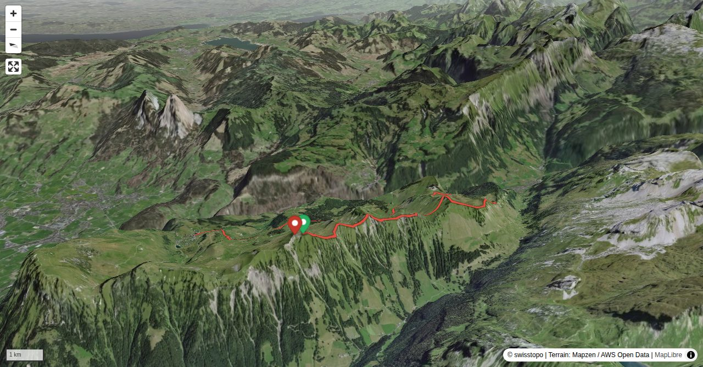

Auf und Ab ist auf der gesamten Tour Programm. Von Spitzchen zu Spitzchen – meist zuoberst auf der Krete, manchmal leicht darunter durch die Sonnen- oder Schattenseite, holprig über steile Kuhweiden, federnd weich auf Erika-Kreten, kraxlig steile Grashalden hinauf und durch Alpenrosenwirrwarr hinab. Und immer ein grosses Panorama vor Augen: rechts die Riemenstaldner Berge mit ihren hell leuchtenden Kalkplatten und Zinnen, links das Mittelland und die beiden kühn geschwungenen Mythen.
Der Stoos kann auch von Morschach mit der Luftseilbahn erreicht werden, Haltestelle: Stoos Bergstat. (Luftseilb).
Quick Facts
| Summit elevation | 1927 m |
|---|---|
| Difficulty | SAC T4+ Check the route notes below for terrain and commitment level. Guide |
| Trailhead | Chlingenstock / Klingenstock, Bergstation |
| Distance | 10.8 km (out-and-back) |
| Total ascent | ~237 m |
| Elevation range | 1303-1927 m |
| Route sources | SAC Route Portal |
Photos


Route Map & Elevation
i
i
sac_scale (precise T1–T6) with
swissTLM3D Wanderwegart
fallback where OSM is silent (coarser T2/T3 and T4+ buckets).
Coverage: OSM 16.7% · swisstopo 58.9% · unknown 23.2%.Elevations computed from the inlined GPX track (SwissTopo height API).
Loading forecast…
3D Terrain View

Route Details
Überschreitung zum Sisiger Spitz mit Abstieg via Wannentritt nach Stoos
- Chlingenstock – Sisiger Spitz: 2 Std. 15 Min.
- Sisiger Spitz – Wannentritt – Stoosbahn: 2 Std. 30 Min
Terrain & safety
Technische Schwierigkeiten stellen sich beim Überqueren unzähliger Stacheldrähte, so dass man oft in die rutschige Nordflanke ausweichen muss. Diese ist oft mit mehr Felsen durchsetzt, als man aus der Karte erahnen würde. Anspruchsvollste Passage ist der Aufstieg über die Grasrippe zum Nordgrat des Sisiger Spitz: obwohl sehr steil, finden Hände und Füsse im moosigen Gras guten Halt. Das Geröllfeld links der Rippe eignet sich ebenfalls für den Aufstieg.
Source: SAC Route Portal
Getting There & Back
Start: Chlingenstock / Klingenstock, Bergstation (1927 m)
Directions from to Chlingenstock / Klingenstock, Bergstation
End: Stoos SZ, Bergstation (1300 m)
Directions from Stoos SZ, Bergstation back to
Cable car to Chlingenstock / Klingenstock, Bergstation.
Field Reference
| Trailhead | Chlingenstock / Klingenstock, Bergstation | 46.95700, 8.67590 |
|---|---|---|
| Summit | Chlingenstock (1927 m) | 46.95743, 8.67462 |
Coordinates are WGS84 decimal degrees (lat, lon). Emergency: 112 (general) or 1414 (Rega air rescue). Page URL: